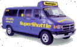

|
 Opened June 16, 1941,
Washington National Airport was
built by the federal government and dedicated by President Franklin D.
Roosevelt. Opened June 16, 1941,
Washington National Airport was
built by the federal government and dedicated by President Franklin D.
Roosevelt.

The airport encompasses 860 acres: 733 on land; 127 on water.
The airport’s name was officially changed to "Ronald Reagan
Washington National Airport" in February 1998 by the United States Congress
and President William J. Clinton.
 Terminal
B/C opened on July 27, 1997. The new terminal has 1 million square feet of floor space spread over three levels,
35 gates
in total, and direct connections to the Metrorail public transportation system
and the parking garages via two enclosed pedestrian bridges. The terminals'
two-level roadway system improves traffic flow through the Airport by sorting
incoming and outgoing traffic. National’s historic Terminal A will undergo
rehabilitation, and continues its aviation service with nine aircraft gates. Terminal
B/C opened on July 27, 1997. The new terminal has 1 million square feet of floor space spread over three levels,
35 gates
in total, and direct connections to the Metrorail public transportation system
and the parking garages via two enclosed pedestrian bridges. The terminals'
two-level roadway system improves traffic flow through the Airport by sorting
incoming and outgoing traffic. National’s historic Terminal A will undergo
rehabilitation, and continues its aviation service with nine aircraft gates.
National Airport has 44 gates;
nine in Terminal A and 35 in Terminal
B/C.
In 1946, Washington National Airport passed a milestone of 1 million annual
passengers; in
1999, approximately 15 million passengers used the airport with
approximately 42,000 passengers a day flying on commercial, general aviation and
commuter flights. (Link here for complete operations
statistics on National Airport.)
Aircraft noise regulations were instituted prior to commercial
jet operations at National. Aircraft flight patterns follow the Potomac River and pilots practice power thrust reduction on
takeoff to reduce noise impacts. There are also aircraft noise limits on flights
associated with nighttime noise requirements in effect from 10:00 p.m. to 7:00
a.m.
Serving as a "short-haul" Airport, National offers nonstop
service to destinations no further than 1,250 miles from Washington, D.C.
Approximately 50,000 vehicles a day travel on the
airport roadways.
Taxicabs serving the airport queue in a two-level 118,000 sq. ft.
structure for 500 vehicles. Each day some 5,000 taxicabs are dispatched at the
airport. The Airports Authority operates the Washington Flyer Express Bus
providing transportation to downtown Washington DC and to Dulles Airport, and
the SuperShuttle,  a shared-ride van service that will pick up passengers at
their home, business or hotel within the Washington metro area and transport them to the
airport.
Public parking is available for nearly 7,500
vehicles, providing Hourly, Daily and Economy choices. Terminal
A is serviced by an Hourly surface lot and both Daily surface
and garage parking. Terminals B and C are served by Hourly and
Daily parking garages. The Economy lot is serviced by Courtesy
Shuttle Buses to and from all terminals.
Over
10,200 people are employed at National Airport. The airport
contributes $2.4 billion in business revenues to the regional economy. (Link
to a press release with more information....)
Signature Flight Support serves
the general aviation community with 31,000 square feet for terminal, administrative, and
office space located in Hanger 7 at the south end of the Airport.
Seventeen passengers airlines serve National. Daily nonstop service
is offered to 62 U.S. cities. Major carriers include: Air Canada; America West; American
Airlines; Continental Airlines; Delta Air Lines; Delta Shuttle; Midway Airlines;
Midwest Express Airlines; Northwest Airlines; Trans World Airlines; United Air
Lines; US Airways; US Airways Shuttle. Regional carriers include: American Eagle;
Continental Express; Delta Connection; and US Airways Express.
There are three runways at National
– 1/19 (6,869 feet)
--15/33 (5,189 feet)
--3/21 (4,505 feet)
Nearly 100 shops and restaurants in the airport
terminals provide visitors with a mix of national, local and regional retail and food concessions.
Nearly
60 phone carrels with data ports are located throughout the new
terminal, making laptop Internet connections convenient.
Staffed information counters are located at the baggage claim area
of Terminal A and at the south and north ends of the concourse in Terminal B/C. |